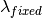
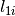
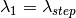
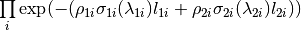
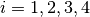
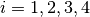
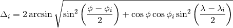
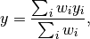
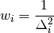

MonteCarloAbsorption dialog.
Table of Contents
Calculates attenuation due to absorption and scattering in a sample & its environment using a Monte Carlo.
| Name | Direction | Type | Default | Description |
|---|---|---|---|---|
| InputWorkspace | Input | MatrixWorkspace | Mandatory | The name of the input workspace. The input workspace must have X units of wavelength. |
| OutputWorkspace | Output | MatrixWorkspace | Mandatory | The name to use for the output workspace. |
| NumberOfWavelengthPoints | Input | number | Optional | The number of wavelength points for which a simulation is attempted (default: all points) |
| EventsPerPoint | Input | number | 1000 | The number of “neutron” events to generate per simulated point |
| SeedValue | Input | number | 123456789 | Seed the random number generator with this value |
| Interpolation | Input | string | Linear | Method of interpolation used to compute unsimulated values. Allowed values: [‘Linear’, ‘CSpline’] |
| SparseInstrument | Input | boolean | False | Enable simulation on special instrument with a sparse grid of detectors interpolating the results to the real instrument. |
| NumberOfDetectorRows | Input | number | 5 | Number of detector rows in the detector grid of the sparse instrument. |
| NumberOfDetectorColumns | Input | number | 10 | Number of detector columns in the detector grid of the sparse instrument. |
| MaxScatterPtAttempts | Input | number | 5000 | Maximum number of tries made to generate a scattering point within the sample (+ optional container etc). Objects with holes in them, e.g. a thin annulus can cause problems if this number is too low. If a scattering point cannot be generated by increasing this value then there is most likely a problem with the sample geometry. |
| ResimulateTracksForDifferentWavelengths | Input | boolean | False | Resimulate tracks for each wavelength point. |
This algorithm performs a Monte Carlo simulation to calculate the correction factors due to attenuation & single scattering within a sample plus optionally its sample environment.
The algorithm will compute the correction factors on a bin-by-bin basis for each spectrum within the input workspace. The following assumptions on the input workspace will are made:
By default the beam is assumed to be the a slit with width and height matching the width and height of the sample. This can be overridden using SetBeam.
By default, the material for the sample & containers will define the values of the cross section used to compute the absorption factor and will include contributions from both the total scattering cross section & absorption cross section. This follows the Hamilton-Darwin [1], [2] approach as described by T. M. Sabine in the International Tables of Crystallography Vol. C [3].
The algorithm proceeds as follows. For each spectrum:
find the associated detector position
find the associated efixed value (if applicable) & convert to wavelength ()
for each event in NEvents
loop over the bins.
If ResimulateTracksForDifferentWavelengths = True then generate tracks using the following procedure for each wavelength step,
where the size of each wavelength step is defined by NumberOfWavelengthPoints. If ResimulateTracksForDifferentWavelengths = false
generate one set of tracks and define a step size of 1 ie all bins are visited. At the moment there are no wavelength dependent effects in the simulation that affect the simulation of the track geometry so the default value for ResimulateTracksForDifferentWavelengths is false.
For each step ( )
)
generate a random point on the beam face defined by the input height & width. If the point is outside of the area defined by the face of the sample then it is pulled to the boundary of this area
generate a random point within the sample or container objects as the scatter point and create a Track from the selected position on the beam face to the scatter point
test for intersections of the track & sample/container objects, giving the number of subsections and corresponding distances within the object for each section, call them 
form a second Track with the scatter position as the starting point and the direction defined by detPos - scatterPos
test for intersections of the track & sample/container objects, giving the number of subsections
and corresponding distances within the object for each section, call them 
define  as the wavelength before scattering &
as the wavelength before scattering &  as wavelength after scattering:
as wavelength after scattering:
- Direct:
,
- Indirect: ,
- Elastic:
compute the self-attenuation factor for all intersections as

where  is the mass density of the material &
is the mass density of the material &
 the absorption cross-section at a given wavelength
the absorption cross-section at a given wavelength
accumulate this wavelength-specific factor across all NEvents
average the accumulated attentuation factors over NEvents and assign this as the correction factor for
this .
finally, if ResimulateTracksForDifferentWavelengths = True, interpolate through the unsimulated wavelength points using the selected method
The default linear interpolation method will produce an absorption curve that is not smooth. CSpline interpolation will produce a smoother result by using a 3rd-order polynomial to approximate the original points.
The simulation may take long to complete on instruments with a large number of detectors. To speed up the simulation, the instrument can be approximated by a sparse grid of detectors. The behavior can be enabled by setting the SparseInstrument property to true.
The sparse instrument consists of a grid of detectors covering the full instrument entirely. The figure below shows an example of a such an instrument approximating the IN5 spectrometer at ILL.

Absorption corrections for IN5 spectrometer interpolated from the sparse instrument shown on the right. The sparse instrument has 6 detector rows and 22 columns, a total of 132 detectors. IN5, on the other hand, has approximately 100000 detectors.
Note
It is recommended to remove monitor spectra from the input workspace since these are included in the area covered by the sparse instrument and may make the detector grid unnecessarily large.
When the sparse instrument option is enabled, a sparse instrument corresponding to the instrument attached to the input workspace is created. The simulation is then run using the created instrument. Finally, the simulated absorption corrections are interpolated to the output workspace.
The interpolation is a two step process: first a spatial interpolation is done from the detector grid of the sparse instrument to the actual detector positions of the full instrument. Then, if ResimulateTracksForDifferentWavelengths = True the correction factors are interpolated over the missing wavelengths.
Note
Currently, the sparse instrument mode does not support instruments with varying EFixed.
The sample to detector distance does not matter for absorption, so it suffices to consider directions only. The detector grid of the sparse instrument consists of detectors at constant latitude and longitude intervals. For a detector  of the full input instrument at latitude
of the full input instrument at latitude  and longitude
and longitude  , we pick the four detectors
, we pick the four detectors  () at the corners of the grid cell which includes (, ). The distance in units of angle between and on a spherical surface is given by
() at the corners of the grid cell which includes (, ). The distance in units of angle between and on a spherical surface is given by

If coincides with any , the  values of the histogram linked to are directly taken from . Otherwise, is interpolated using the inverse distance weighing method
values of the histogram linked to are directly taken from . Otherwise, is interpolated using the inverse distance weighing method

where the weights are given by

The wavelength points for simulation with the sparse instrument are chosen as follows:
After the simulation has been run and the spatial interpolation done, the interpolated histograms will be further interpolated to the wavelength points of the input workspace. This is done similarly to the full instrument case. If only a single wavelength point is specified, then the output histograms will be filled with the single simulated value.
Note
If the input workspace contains varying bin widths then the output is always interpolated.
Example: A cylindrical sample with no container
data = CreateSampleWorkspace(WorkspaceType='Histogram', NumBanks=1)
data = ConvertUnits(data, Target="Wavelength")
# Default up axis is Y
SetSample(data, Geometry={'Shape': 'Cylinder', 'Height': 5.0, 'Radius': 1.0,
'Center': [0.0,0.0,0.0]},
Material={'ChemicalFormula': '(Li7)2-C-H4-N-Cl6', 'SampleNumberDensity': 0.07})
# Simulating every data point can be slow. Use a smaller set and interpolate
abscor = MonteCarloAbsorption(data)
corrected = data/abscor
Example: A cylindrical sample with no container, resimulating tracks for different wavelengths, interpolating with a CSpline
data = CreateSampleWorkspace(WorkspaceType='Histogram', NumBanks=1)
data = ConvertUnits(data, Target="Wavelength")
# Default up axis is Y
SetSample(data, Geometry={'Shape': 'Cylinder', 'Height': 5.0, 'Radius': 1.0,
'Center': [0.0,0.0,0.0]},
Material={'ChemicalFormula': '(Li7)2-C-H4-N-Cl6', 'SampleNumberDensity': 0.07})
# Simulating every data point can be slow. Use a smaller set and interpolate
abscor = MonteCarloAbsorption(data, ResimulateTracksForDifferentWavelengths=True, NumberOfWavelengthPoints=50,
Interpolation='CSpline')
corrected = data/abscor
Example: A cylindrical sample setting a beam size
data = CreateSampleWorkspace(WorkspaceType='Histogram', NumBanks=1)
data = ConvertUnits(data, Target="Wavelength")
# Default up axis is Y
SetSample(data, Geometry={'Shape': 'Cylinder', 'Height': 5.0, 'Radius': 1.0,
'Center': [0.0,0.0,0.0]},
Material={'ChemicalFormula': '(Li7)2-C-H4-N-Cl6', 'SampleNumberDensity': 0.07})
SetBeam(data, Geometry={'Shape': 'Slit', 'Width': 0.8, 'Height': 1.0})
# Simulating every data point can be slow. Use a smaller set and interpolate
abscor = MonteCarloAbsorption(data, NumberOfWavelengthPoints=50)
corrected = data/abscor
Example: A cylindrical sample with predefined container
The following example uses a test sample environment defined for the TEST_LIVE
facility and ISIS_Histogram instrument and assumes that these are set as the
default facility and instrument respectively. The definition can be found at
[INSTALLDIR]/instrument/sampleenvironments/TEST_LIVE/ISIS_Histogram/CRYO-01.xml.
data = CreateSampleWorkspace(WorkspaceType='Histogram', NumBanks=1)
data = ConvertUnits(data, Target="Wavelength")
# Sample geometry is defined by container but not completely filled so
# we just define the height
SetSample(data, Environment={'Name': 'CRYO-01', 'Container': '8mm'},
Geometry={'Height': 4.0},
Material={'ChemicalFormula': '(Li7)2-C-H4-N-Cl6', 'SampleNumberDensity': 0.07})
# Simulating every data point can be slow. Use a smaller set and interpolate
abscor = MonteCarloAbsorption(data)
corrected = data/abscor
Example: A cylindrical sample using a sparse instrument description, interpolating with a CSpline
data = CreateSampleWorkspace(WorkspaceType='Histogram', NumBanks=1)
data = ConvertUnits(data, Target='Wavelength')
SetSample(data, Geometry={'Shape': 'Cylinder', 'Height': 5.0, 'Radius': 1.0,
'Center': [0.0,0.0,0.0]},
Material={'ChemicalFormula': '(Li7)2-C-H4-N-Cl6', 'SampleNumberDensity': 0.07},
)
abscor = MonteCarloAbsorption(data, SparseInstrument=True,
NumberOfDetectorRows=5, NumberOfDetectorColumns=5,
Interpolation='CSpline')
corrected = data/abscor
| [1] | Darwin, C. G., Philos. Mag., 43 800 (1922) doi: 10.1080/10448639208218770 |
| [2] | Hamilton, W.C., Acta Cryst, 10, 629 (1957) doi: 10.1107/S0365110X57002212 |
| [3] | Sabine, T. M., International Tables for Crystallography, Vol. C, Page 609, Ed. Wilson, A. J. C and Prince, E. Kluwer Publishers (2004) doi: 10.1107/97809553602060000103 |
Categories: AlgorithmIndex | CorrectionFunctions\AbsorptionCorrections
C++ header: MonteCarloAbsorption.h (last modified: 2020-02-03)
C++ source: MonteCarloAbsorption.cpp (last modified: 2020-02-06)


{kind=link}